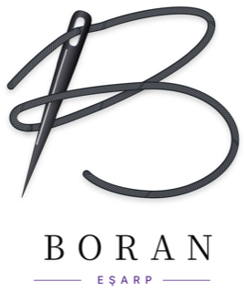
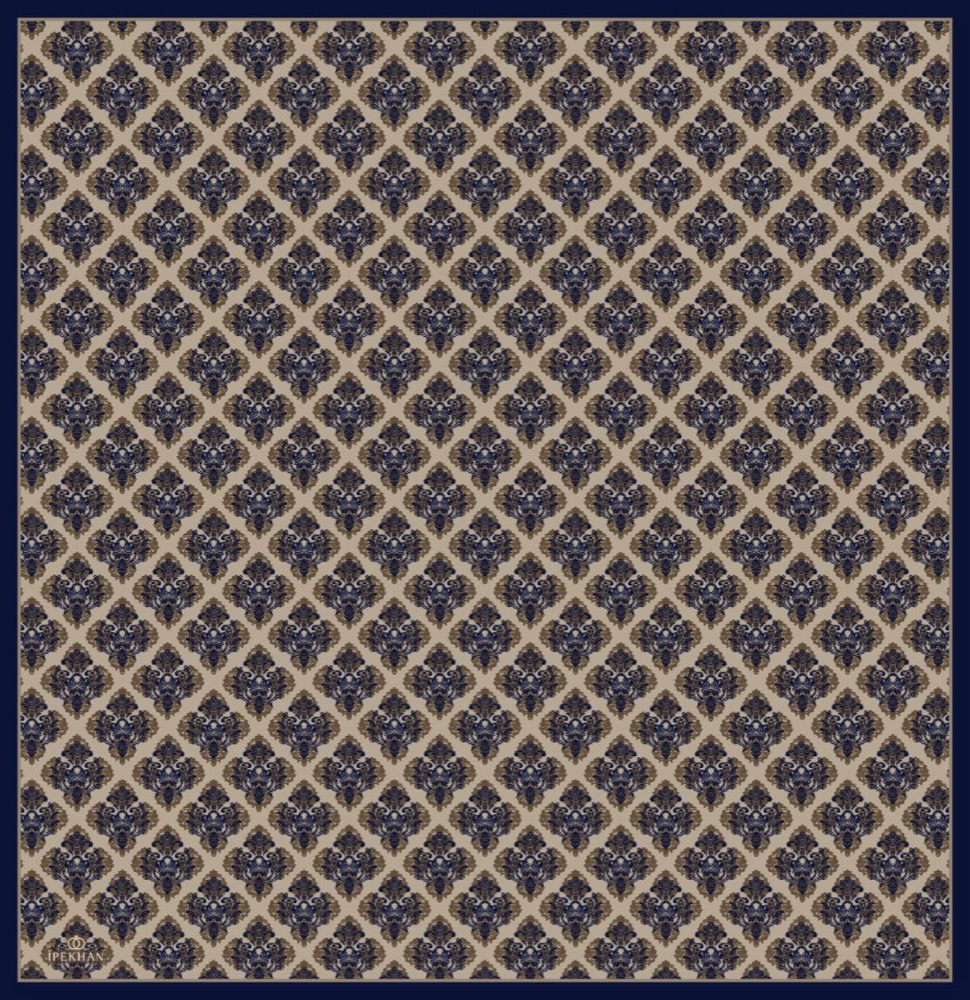
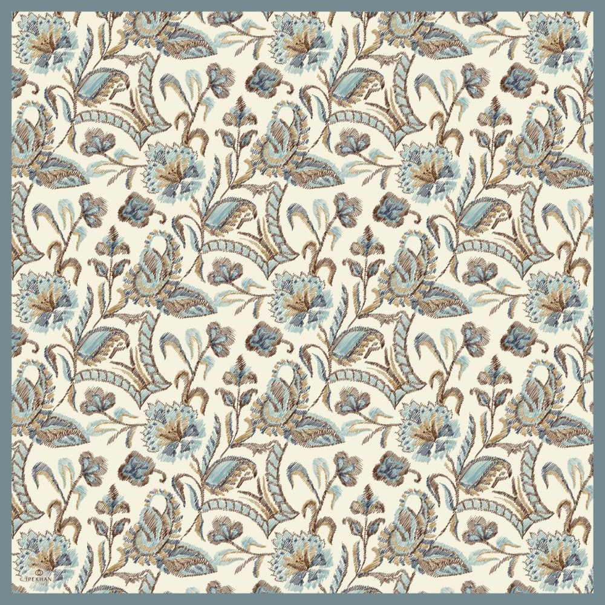

Boran Eşarp Tekstil; dijital ve transfer baskıyla eşarp üreten bir Bursa atölyesidir. Reaktif baskıyı güvendiğimiz fason ortaklarımızda yaptırırız. Tasarımdan sevkiyata kadar her adım dijital olarak takip edilir.

Personel, müşteri ve tasarımcılar e-posta ve şifreleriyle giriş yapar.
Logomuzdaki iğne ve iplik, işimize bakışımızı anlatır: sabır, incelik ve emek. Bir desenin kumaşa geçtiği her adımı aynı özenle takip ederiz.
Damasktan çiçek nakışa, her desen kumaşa aslına uygun renklerle basılır.


Boran Eşarp, Kestel Barakfakih Organize Sanayi Bölgesi'nde eşarp ve şal üretimi yapar. Müşterilerimizin desenlerini kumaşa en doğru renk ve en temiz baskıyla aktarmak için kendi bünyemizde dijital ve transfer baskı yaparız; reaktif baskı gereken işleri fason ortaklarımızda yaptırır, kontrolünü ve sevkiyatını biz üstleniriz.
Her sipariş ilk kayıttan sevkiyata kadar kendi geliştirdiğimiz üretim sisteminde izlenir; müşterilerimiz de işlerinin hangi aşamada olduğunu panellerinden anlık görebilir.
Desen hazırlığından sevkiyata kadar süreci biz yönetiriz; reaktif baskı fason olarak yaptırılır.
Tasarımcılarımız deseni rapor ölçüsüne göre hazırlar, renk varyantlarını çıkarır.
Yüksek çözünürlüklü dijital baskıyla ince detaylar ve canlı renkler.
Kâğıttan kumaşa transfer; makina, hız, ısı ve bar ayarları kayıt altında.
Doğal elyaflı kumaşlar için reaktif baskıyı fason ortaklarımızda yaptırır, takibini ve kontrolünü biz yaparız.
Müşteri kumaşlarının girişi, etiketlenmesi ve stok ekstresi.
Sağlam / hatalı ayrımıyla kontrol, sevk fişiyle teslim.
“Her eşarp, onu taşıyacak kişinin hikâyesine yakışsın diye üretilir.”Boran Eşarp Tekstil
Numune, fiyat ve sipariş için bizimle iletişime geçin.